Гравити Фолз
«Гравити Фолз» — американский мультсериал, созданный Алексом Хиршем для телеканала Disney Channel. Впервые вышел в эфир 15 июня 2012 года и завершился 15 февраля 2016 года. Сюжет: 12-летние близнецы Диппер и Мэйбл отправляются на лето к своему двоюродному дяде Стэну в далёкий городок Гравити Фоллз. Стэн владеет туристической достопримечательностью под названием «Хижина чудес», где продаёт сувениры и пытается заработать деньги на сомнительных аттракционах. Вскоре дети обнаруживают, что захолустный Гравити Фоллз не так прост, как кажется на первый взгляд. В лесу они находят таинственный «Дневник № 3», который содержит информацию о различных аномалиях и существах, обитающих в городе. Вместе со своими новыми друзьями Диппер и Мэйбл начинают расследовать загадки города, сталкиваясь с мистическими существами, монстрами и магией. Главным антагонистом сериала оказывается могущественный демон по имени Билл Шифр — треугольное существо из другого измерения, мечтающее вырваться на свободу и подчинить себе наш мир. Его цель — стереть грань между измерениями, что приведёт к хаосу и разрушению. Победить Билла можно было только с помощью древнего пророчества — Зодиака Билла Шифра. Это был круг из десяти символов, каждому из которых соответствовал определённый персонаж.
| Обозначение в Зодиаке Билла Шифра | Персонаж |
|---|---|
| 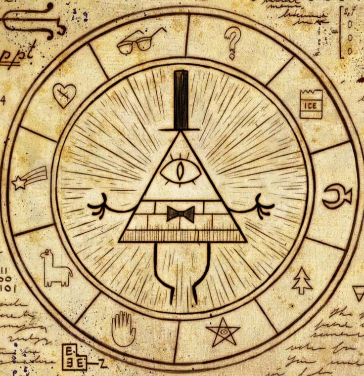 | 
Билл Шифр |
| 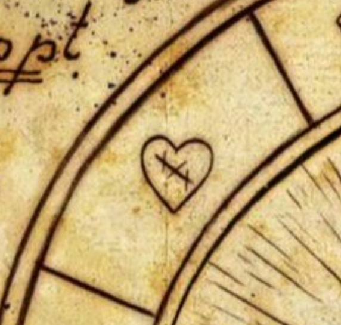 |  Робби Валентино |
| 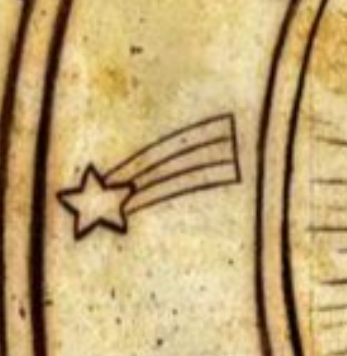 |  Мэйбл Пайнс |
| 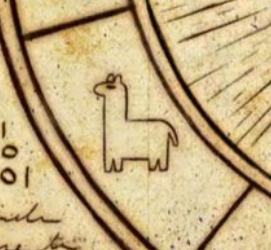 |  Пасифика Нортвест |
| 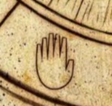 |  Стенфорд Пайнс |
 | 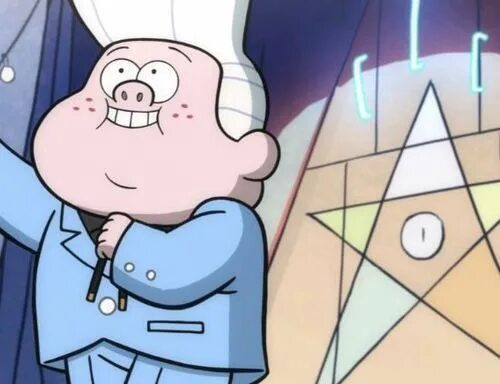 Гидеон Чарльз Глиффул |
| 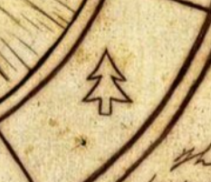 |  Диппер Пайнс |
| 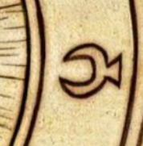 |  Стенли Пайнс |
| 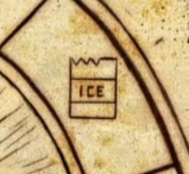 |  Венди Кордрой |
| 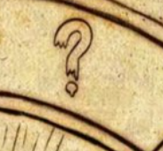 |  Зус Рамирез |
| 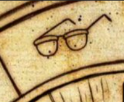 |  Фидлфорд МакГаккет |